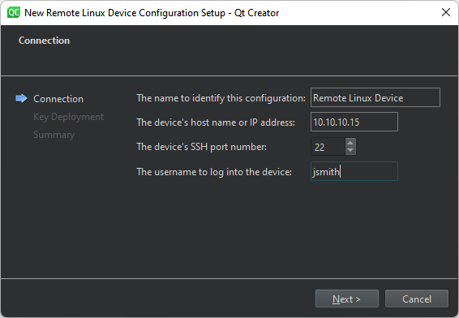
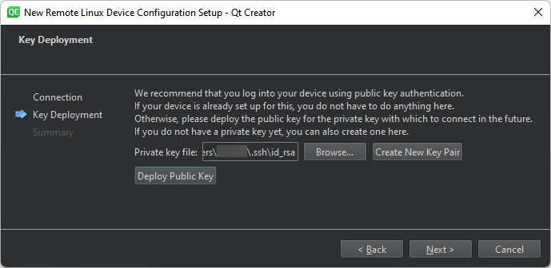

Add a QNX Neutrino device
Create a connection between Qt Creator and a QNX Neutrino device to run, debug, and analyze applications on the device. The QNX Neutrino RTOS has additional command-line tools and services, as described in Qt for QNX.

QNX device preferences
Use a wizard to add a device
To use a wizard to add QNX Device:
- Go to Preferences > Devices > Devices.
- Select Add > QNX Device > Start Wizard.

- In The name to identify this configuration, enter a name for the connection.
- In The device's host name or IP address, enter the host name or IP address of the device. This becomes the value of the
%{Device:HostAddress}variable. - In The device's SSH port number, enter the port number for SSH connections. This becomes the value of the
%{Device:SshPort}variable. - In The username to log into the device, enter the username to log into the device and run the application. This becomes the value of the
%{Device:UserName}variable. - Select Next to open the Key Deployment dialog.

- In Private key file, select a private key file for authentication. This becomes the value of the
%{Device:PrivateKeyFile}variable. - If you don't have a public-private key pair, select Create New Key Pair. For more information, see Generate SSH keys.
- Select Deploy Public Key to copy the public key to the device.
- Select Next to create the connection.
To change device preferences, go to Preferences > Devices > Devices and select a device in Device.
Manually add a device
To add a device without using the wizard, select QNX Device in the pull-down menu of the Add button.
See also How To: Develop for QNX, How To: Develop for remote Linux, and How To: Manage Kits.